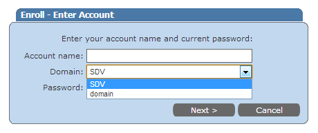

The list of managed domains shown on the Self-Service Portal is sorted alphabetically, and
is case-sensitive. If you want to sort domains you should specify the name of the domain
that is supposed to be on top in capital letters in the Domains section of the
Administrative Portal.
